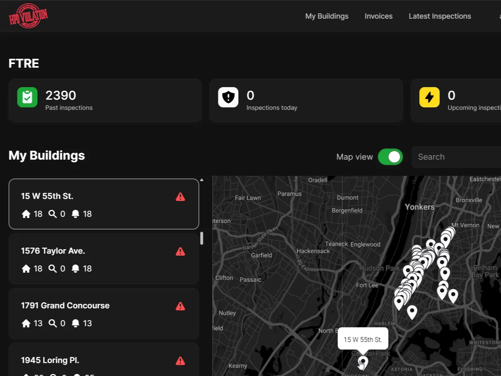
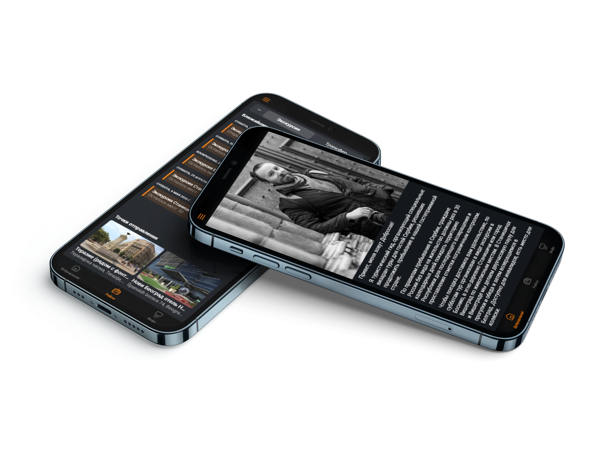
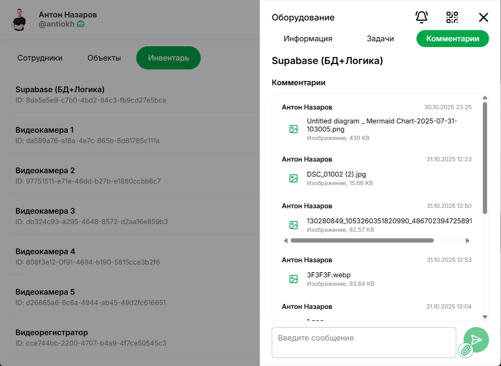
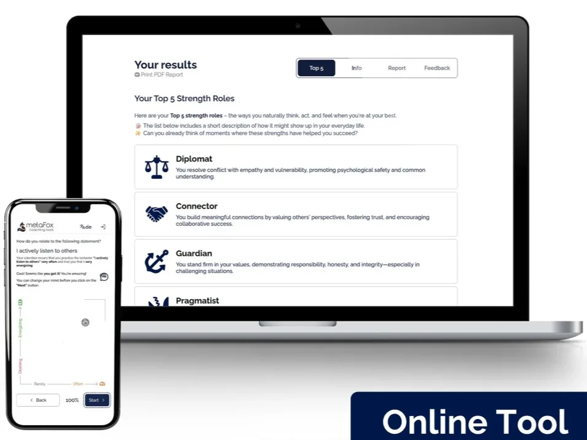
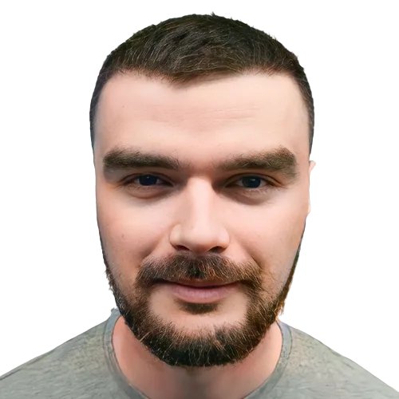

Build, take over, hand over
We build and take over business systems your company can keep changing without losing control.
For live products, internal systems, SaaS and operational platforms. We stabilise what matters, rebuild only what traps the business, and leave a system your team or next partner can continue.
- Paid review before major takeover work
- One accountable path from architecture to handover
- No forced dependence on the original team
Why this combination works
Fast-to-ship web product delivery, strong ownership over data and auth, and flexible automation your team can keep evolving.
Business outcomes
Results the business actually feels.
Not feature delivery for its own sake, but operational impact: speed, continuity, lower dependency on individual people, and less human error in the loop.
10x-13x
Revenue growth after system redesign
70,000+
Documents migrated into structured systems
Hours to minutes
Manual operations reduced through automation
Lower dependency
Processes structured so work is less dependent on one employee or one "system person"
Fewer manual errors
Automation reduces repetitive handling, missed steps and operational inconsistency
Easier handover
The next team can understand the system because critical logic is documented and structured
Choose the starting point
Build new, or take control of what already exists.
Both routes start with the business-critical flow and end with a system that can be continued by NeedleBit, an internal team or another qualified partner.
Take over an existing system
- The original developer or agency has left
- Changes are slow, risky or impossible to estimate
- Data ownership, permissions or integrations are unclear
- The live product needs stabilisation before more features
- Start with a paid System Takeover Review
Build & Hand Over
- Build around a validated process or product
- Keep discovery, architecture and delivery in one line
- Use managed foundations where they reduce unnecessary risk
- Document the critical logic and operating model
- Hand the system to the client, next team or continuity plan
How engagements start
Take over what exists. Build what is missing. Hand it over cleanly.
A bounded first step for an unknown system, staged ownership for delivery, and continuity when retaining the architectural context is useful.
New system
Build & Hand Over
We design and deliver a new internal system, portal or SaaS foundation, then document and transfer it without forced dependency.
Paid first step
System Takeover Review
We inspect the critical contour, ownership, data, permissions and immediate risks before committing to major work.
Existing system
Takeover Delivery
We stabilise the critical flow, correct weak architecture and complete the system in controlled stages.
Architecture
Architecture & Migration
We preserve what works and move only the data, permissions, integrations or logic that block safe development.
After launch
System Continuity
Reserved capacity for controlled changes, integrations, documentation and architectural support — not unlimited on-call.
Best fit
For systems important enough that stagnation already costs money.
Companies inheriting a live system
The product has users and value, but the original team can no longer continue it safely.
Founders with a validated product
The prototype has traction and now needs production-ready architecture, ownership and handover.
CTOs needing delivery capacity
The technical direction is clear, but the internal team should not rebuild every standard layer or absorb inherited debt alone.
Agencies and fractional CTOs
You own the client relationship and direction; NeedleBit closes the architecture and implementation gap.
Takeover triggers
When a live system needs senior ownership, not another isolated task.
The first job is to reduce uncertainty and protect the critical business flow before adding more scope.
The system is fragile
Nobody is sure what breaks if one workflow, field, or integration changes.
Every change takes too long
Small requests become expensive because the architecture was never cleaned up.
Data is hard to control
Scattered tools create duplicated, missing, or contradictory information across the business.
Manual work keeps growing
Teams compensate with people, chat, and follow-up instead of systemized operations.
Selected evidence
Systems used under real operational pressure.
Named examples of migration, operational redesign, production delivery and products that continued after handover.

Operations
Exit Lead
70,000 historical documents migrated into Supabase
Dual-interface inspection platform connecting field operations, client portal workflows, automated PDF reporting, and device-linked inspection data.

Revenue
Dobri Visarun
Roughly 10x revenue growth in about three months
Turned a fragmented service business into a lightweight PWA with centralized intake, Telegram notifications, and sharply lower client-handling time.

Field ops
Andronyevskaya ERP
Self-hosted ERP with QR workflows and Telegram Mini App login
Combined field tasks, asset logic, role-based administration, and real-time operational flows in one self-hosted system.

Assessments
MetaFox Strengths Explorer
Complex assessment model turned into a usable product
Translated an evolving coaching methodology into a production-ready assessment platform with scoring, peer feedback, visual reports, and PDF delivery.

Government
AIS MosRazvitie
Central reporting and data system for a major cultural network
Modernized a large operational platform for distributed institutions, reporting workflows, moderation, exports, and external data exchange.

AI product
PromptlessPress
AI-powered product generation and export workflow
Built a structured generation system for AI-made digital products with mockups, metadata, packaging, and guarded iteration flows.

SaaS
Sefcast
AI-oriented SEO analytics workspace with reusable UI system
Delivered custom components and a product-wide UI kit for a multi-screen SaaS with dashboards, goal builders, and account workflows.

Community product
Serbia Networking App
Event discovery and contact-exchange product for a local community
Created a mobile-first networking app that connected event discovery, participant onboarding, virtual business cards, and Telegram updates.

Healthtech
Vencer Autismo
Recurring assessment platform with analytics and recommendations
Built a full-stack assessment product with weighted scoring, progress tracking, personalized guidance, and admin-controlled logic.
Healthtech
Vencer Autismo
Recurring assessment platform with analytics and recommendations
Built a full-stack assessment product with weighted scoring, progress tracking, personalized guidance, and admin-controlled logic.
Community product
Serbia Networking App
Event discovery and contact-exchange product for a local community
Created a mobile-first networking app that connected event discovery, participant onboarding, virtual business cards, and Telegram updates.
SaaS
Sefcast
AI-oriented SEO analytics workspace with reusable UI system
Delivered custom components and a product-wide UI kit for a multi-screen SaaS with dashboards, goal builders, and account workflows.
AI product
PromptlessPress
AI-powered product generation and export workflow
Built a structured generation system for AI-made digital products with mockups, metadata, packaging, and guarded iteration flows.
Government
AIS MosRazvitie
Central reporting and data system for a major cultural network
Modernized a large operational platform for distributed institutions, reporting workflows, moderation, exports, and external data exchange.
Assessments
MetaFox Strengths Explorer
Complex assessment model turned into a usable product
Translated an evolving coaching methodology into a production-ready assessment platform with scoring, peer feedback, visual reports, and PDF delivery.
Field ops
Andronyevskaya ERP
Self-hosted ERP with QR workflows and Telegram Mini App login
Combined field tasks, asset logic, role-based administration, and real-time operational flows in one self-hosted system.
Revenue
Dobri Visarun
Roughly 10x revenue growth in about three months
Turned a fragmented service business into a lightweight PWA with centralized intake, Telegram notifications, and sharply lower client-handling time.
Operations
Exit Lead
70,000 historical documents migrated into Supabase
Dual-interface inspection platform connecting field operations, client portal workflows, automated PDF reporting, and device-linked inspection data.
Controlled delivery
Limit uncertainty first. Take responsibility in stages.
Takeover review or new-system discovery
For an existing system we review the critical contour, ownership and immediate risks. For a new system we define the validated process and constraints.
A bounded next step, not a fictional estimate of the whole unknown system.
Architecture and staged plan
We decide what to keep, stabilise, migrate or rebuild and define the result of each stage.
Architecture, risk boundaries and stop/go decisions.
Stabilise or build
We protect the critical flow first, then implement backend logic, interfaces and automation in controlled increments.
A working stage that can be verified before the next commitment.
Handover and continuity
We document the critical architecture and operating model, transfer access and offer reserved continuity where it is useful.
A system the client or next qualified team can continue.
Testimonials
What clients remember after the build.
Not generic praise. Repeated signals about clarity, reliability, speed, and systems that actually reduce operational drag.
"Significantly increased the efficiency of working with information, reduced the burden on technical teams, and removed the need for training because the interface was intuitive."

State information system project
"High level of professionalism, responsibility, and flexibility of thinking. Anton always sought the best solution and delivered within the specified time."
Aviation-related projects
"A reliable and responsible partner who quickly finds solutions, pays great attention to detail, and consistently delivers high-quality work."
Multi-project collaboration
"Client handling time was minimized, the business grew significantly, and feedback from customers on booking convenience kept coming in."
Travel and tour applications
"Anton is an incredible specialist with a clear vision of the project, strong patience in communication, and an obvious drive to deliver the work at the highest level."
Client recommendation
"Anton helped choose the right technology stack, developed a high-quality solution, and improved the service with strong communication and attention to detail."
Founder, Autismify
"Anton co-created our Strengths Discovery app, owned the full stack from WeWeb to Xano, and contributed not just to implementation but to the product vision itself."
Strengths Discovery App
"Anton is an incredible specialist with a clear vision of the project, strong patience in communication, and an obvious drive to deliver the work at the highest level."
Client recommendation
"A reliable and responsible partner who quickly finds solutions, pays great attention to detail, and consistently delivers high-quality work."
Multi-project collaboration
"Client handling time was minimized, the business grew significantly, and feedback from customers on booking convenience kept coming in."
Travel and tour applications
"High level of professionalism, responsibility, and flexibility of thinking. Anton always sought the best solution and delivered within the specified time."
Aviation-related projects
"Significantly increased the efficiency of working with information, reduced the burden on technical teams, and removed the need for training because the interface was intuitive."
State information system project
"Anton helped choose the right technology stack, developed a high-quality solution, and improved the service with strong communication and attention to detail."
Founder, Autismify
"Anton co-created our Strengths Discovery app, owned the full stack from WeWeb to Xano, and contributed not just to implementation but to the product vision itself."
Strengths Discovery App
Architecture-led ownership
Senior ownership from the first review to handover.
Anton leads discovery, architecture and critical delivery. Additional specialists join only where the work requires them. The goal is a controlled result and a system that remains transferable after delivery.
- Taking over and stabilising live systems
- Architecture & Migration
- Frontend systems in WeWeb or FlutterFlow
- Automation with n8n or Activepieces
- Integrating fragmented tools into one operating system
FAQ
Questions before a takeover, new build or handover.
No. Existing systems start with a paid review of the critical contour. The next step may be stabilisation, migration, selective rebuilding or completion.
Often, yes. In many cases the better move is to preserve the current interface and rebuild the logic behind it.
No. The best fit is a company with a live product or operation where system stagnation already has a business cost.
We typically work with WeWeb or FlutterFlow on the frontend, Supabase or Xano on the backend, and n8n or Activepieces for automation.
After stabilisation or launch, System Continuity can reserve capacity for controlled changes, integrations, documentation and architectural support.
Visual tools are implementation environments, not a substitute for architecture. We choose them only when they improve delivery without trapping critical logic or ownership.
Choose the meeting type
What do you want to discuss?
Choose the closest scenario. Cal.com will open with the topic already filled in, so the meeting starts with the right context.
Existing system
Takeover or stabilisation
A live product, internal platform or automation has become risky, slow or difficult to continue.
Book this discussionNew system
Build and hand over
An internal platform, client portal, SaaS product or automation needs architecture and implementation.
Book this discussionPartnership
Agency or CTO delivery support
You need architecture, implementation capacity or a technical delivery partner without handing over the client relationship.
Book this discussionPrefer to explain the situation first? Write in Telegram.